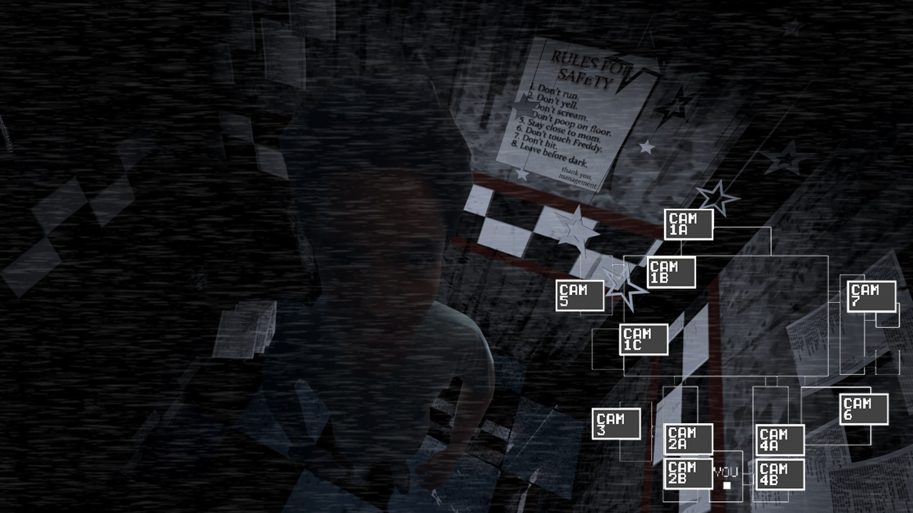

SOS Mata Atlântica é uma ONG ambiental que atua na promoção de políticas públicas que conservam a mata atlântica.
A organização foi fundada em 1986 quando defensores da questão ambiental quiseram preservar os últimos remanescentes da Mata Atlântica, que são 12% da floresta que existia originalmente. Desde então a fundação tem incentivado e mobilizado a preservação por meios da educação e campanhas.
asdasfd
